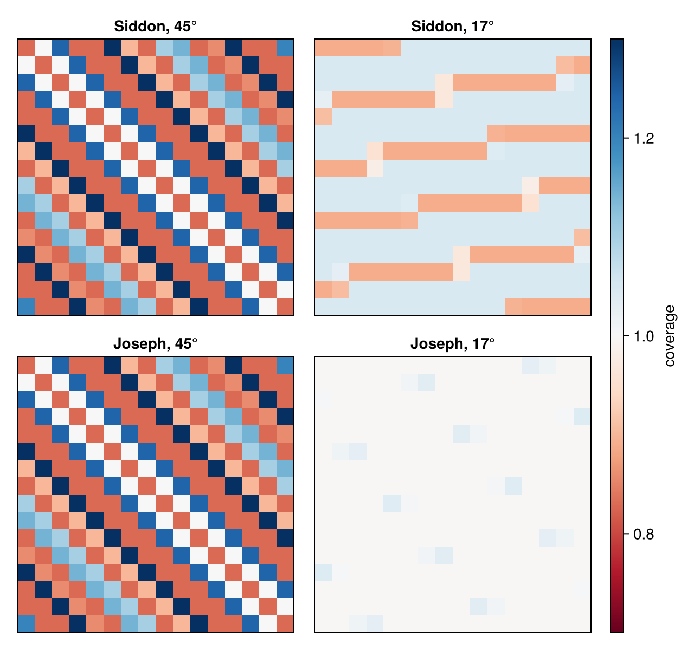

Joseph's method
Siddon's method treats the image as a set of cubes with constant values and computes the exact length of a ray in every cube. Joseph (1982) starts from a different picture: the voxel values are samples of a smooth function at the voxel centres, and between the centres the function is interpolated linearly. The line integral of this function along a ray is again a weighted sum of the voxel values,
\[y_i = \sum_j a_{ij} x_j,\]
but the weights $a_{ij}$ are now interpolation weights instead of intersection lengths.
using CTOperatorsThe idea
A ray runs more along one axis than along the others; call it the principal axis. Joseph cuts the volume into the layers of voxels perpendicular to this axis and takes one sample per layer: where the ray crosses the plane through the centres of the layer, the image is interpolated from the nearest voxel centres in that plane (from two in 2D, from four in 3D, bilinear). Every sample stands for the piece of the ray inside its layer, so it is multiplied by the length of that piece,
\[y = \sum_{\text{layers } l} \frac{\Delta_k}{|\cos \gamma_k|} \, f(\text{sample}_l),\]
where $\Delta_k$ is the voxel size along the principal axis $k$ and $\gamma_k$ the angle between the ray and that axis. This is the trapezoidal rule for the line integral of the interpolated image, with one step per layer. Choosing the principal axis keeps the steps at most $\sqrt{3}$ voxels long and guarantees one sample in every layer the ray crosses.
In the figure a ray crosses a 2D image. The orange dots are its samples on the centre lines (grey dots are the pixel centres); the pixels are coloured by their weight for this ray. Every sample shares its weight between the two pixels next to it. Move the slider to change the ray: when the ray turns past 45°, the principal axis switches from x to y.
The weights in the figure come from the package: the back projection of the value 1 along a single ray. Rounded to two digits, first index x (rows of the printout), second index y; compare with the same ray on the page of Siddon's method:
image = ImageGeom(; dims=(8, 8), deltas=(1.0, 1.0))
ray = RayList([-6.0; -2.0; 0.0;;], [6.0; 3.0; 0.0;;])
weights = reshape(adjoint(JosephProjector(image, ray; eltype=Float64)) * [1.0], 8, 8)
round.(weights; digits=2)8×8 Matrix{Float64}:
0.0 0.0 0.5 0.59 0.0 0.0 0.0 0.0
0.0 0.0 0.05 1.04 0.0 0.0 0.0 0.0
0.0 0.0 0.0 0.68 0.41 0.0 0.0 0.0
0.0 0.0 0.0 0.23 0.86 0.0 0.0 0.0
0.0 0.0 0.0 0.0 0.86 0.23 0.0 0.0
0.0 0.0 0.0 0.0 0.41 0.68 0.0 0.0
0.0 0.0 0.0 0.0 0.0 1.04 0.05 0.0
0.0 0.0 0.0 0.0 0.0 0.59 0.5 0.0Every row of the printout (fixed x) holds one sample: its weights add up to the length of the ray per column, $\sqrt{1 + (5/12)^2} \approx 1.08$, shared between two neighbouring pixels.
Properties
- Smooth. The projection changes continuously when a ray moves; Siddon's jumps when the ray crosses into the next voxel. Rays that lie exactly between two voxels, ambiguous for Siddon, take the mean of both.
- Exact for linear images. If the voxel values are samples of a linear function of the position, the interpolation reproduces it, and the sum per layer integrates it exactly. The test suite checks this for rays that cross the volume.
- Exact adjoint. The back projection uses the same weights, as iterative solvers require.
- Any geometry. Like Siddon's, the method needs only the start and end point of each ray.
- Simple to compute. One sample per layer and no decisions which axis is crossed next: the number of steps is known when the ray starts.
The interpolated image is not zero right at the faces of the volume: across the ray it fades to zero within one voxel outside the outermost voxel centres. Segments that begin or end inside the volume (rather than rays from a source outside it) count only the part of the first and last layer they cover; there the method is less accurate, because along the principal axis the image is constant within a layer.
Coverage of the voxels
Like Siddon's, Joseph's method is ray-driven, and the rays of one view cover the voxels unevenly. The figure shows, for one parallel-beam view with one ray per pixel, the summed weights of all rays in every pixel (1 is even coverage). At 45° the two methods give the same weights (Joseph already noted this), and the same pattern. At other angles Joseph's interpolation spreads every ray over neighbouring pixels: at 17° Siddon's coverage varies between 0.89 and 1.05 in bands, Joseph's is 1.00 except for isolated pixels with up to 1.04.

For reconstructions this means that Joseph's method is less prone to checkerboard patterns, but at angles near 45° it needs as many rays per voxel as Siddon's. Projectors that integrate over the detector cells (footprint methods) avoid the problem altogether.
Implementation
- The ray is traversed in voxel coordinates, where every voxel is a unit cube; the principal axis is the one along which the ray advances most in voxels, so anisotropic voxels need no special case.
- The ray is clipped to the region where the interpolated image can be nonzero; the first and last layer follow, and the loop runs over the layers in between. Per layer the transverse position of the sample is a multiply-add, followed by the bilinear interpolation, with neighbours outside the volume counted as zero.
- The forward projection runs one work-item per ray; the back projection adds the four weighted values of every sample with atomic additions.
Reference
- P. M. Joseph, "An improved algorithm for reprojecting rays through pixel images", IEEE Trans. Med. Imaging 1(3), 192–196, 1982.
This page was generated using Literate.jl.